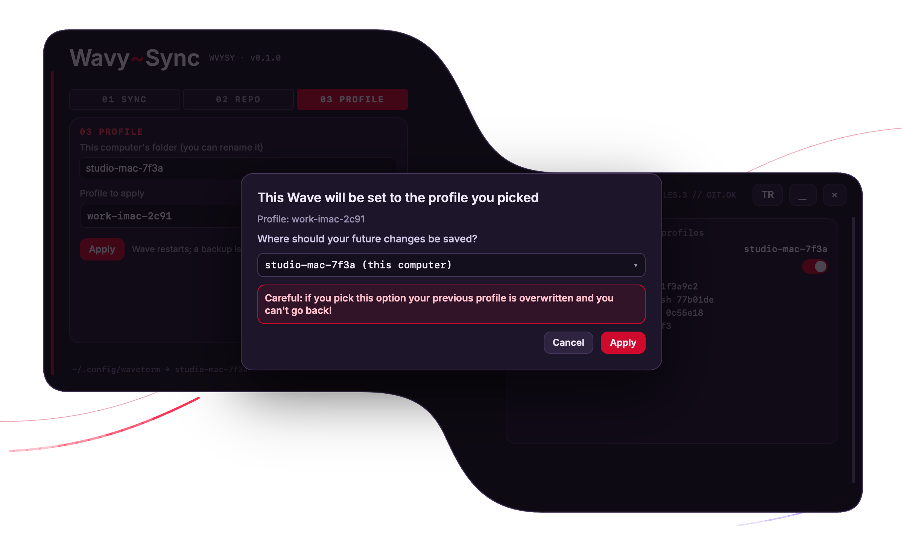
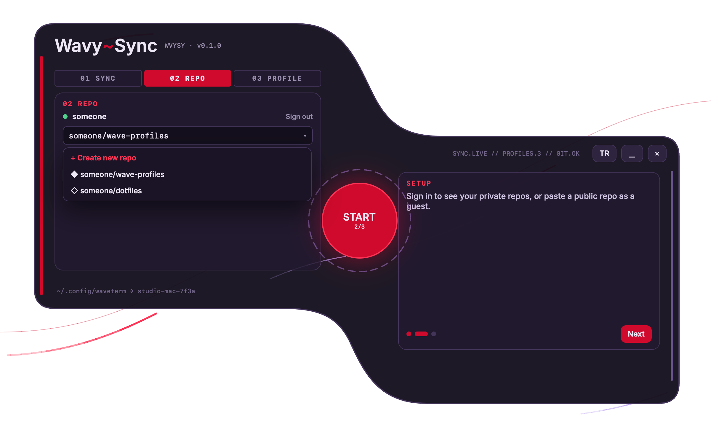

Push ve Pull
Push bu Wave'i depodaki klasörüne gönderir, düzenler dahil; penceredeki çizgiler sağa akar. Pull klasörü Wave'e geri getirir, çizgiler sola akar. İkisi de bitince bir an yeşil SYNCED görünür. Pull, Wave'i yalnızca düzenler gerçekten farklıysa kapatır.

Gürültüsüz canlı senkron
Canlı senkron anahtarını açınca bir arka plan süreci ayarları, widget'ları, temaları ve bağlantıları değiştikçe gönderir. Çalışma alanları, sekmeler ve düzenler her bölme taşıdığında değişir; bu yüzden Canlı ayarlar'dan açmadıkça Push'u bekler ve açmadan önce WavySync seni GitHub'ın hız limitleri konusunda uyarır.

Widget'lar araçlarıyla gelir
WavySync her widget'ın neyi çalıştırdığını bulur: bir git deposu ve derleme adımları, bir Homebrew paketi, global bir npm paketi, bir cargo install ya da yanında taşıdığı küçük bir betik. Profil uygulanınca diğer bilgisayara kurulur.

Her bilgisayara bir klasör, her profil her yerde
Her bilgisayar adını taşıyan kendi klasörüne kaydeder, adını değiştirebilirsin. Başka bir bilgisayarın profilini uygula ve ileride yapacağın değişikliklerin nereye gideceğini seç: kendi klasörün, uyguladığın profil ya da yeni bir klasör. Önce mevcut Wave'in yedeklenir.

Senin deponun, private ya da public
GitHub ile giriş yapıp private bir depo seç ya da oluştur, ya da public bir depoyu bu bilgisayarın kendi git girişiyle misafir olarak kullan. Bir şey çıkmadan önce anahtarlar, token'lar ve parolalar ayıklanır; ev klasörün {HOME} olarak saklanır, böylece yollar başka bir kullanıcı adında da çalışır.
